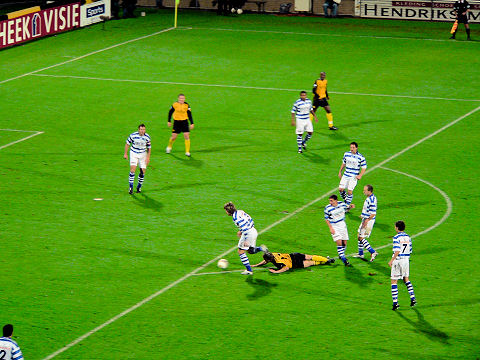
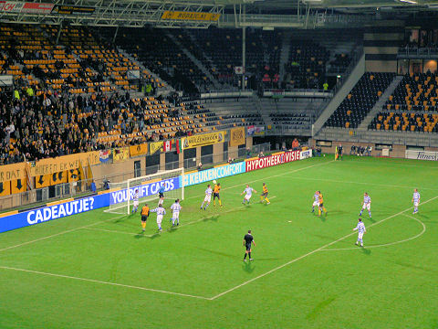
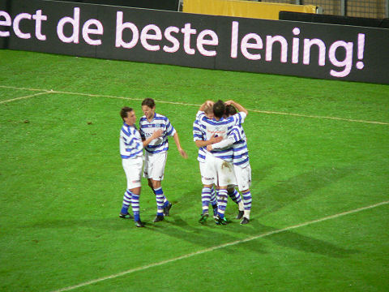
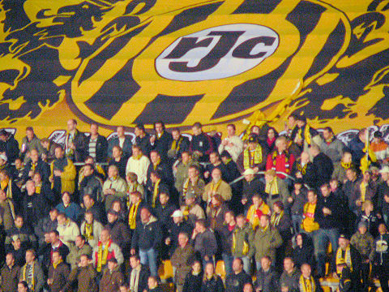

|
Roda JC - De Graafschap (3-2) 30 oktober 2007
|
Voor de tweede keer in vier dagen: Roda JC - De Graafschap. Nu echter voor de
beker en voor nauwelijks 3.000 toeschouwers. Oost is zelfs gesloten.
De lege oost-tribune.

Roda begint fel aan de wedstrijd maar loopt voortdurend vast op de blauwwitte
muur.
Het luid aangemoedigde Roda zakte na twintig minuten enigszins in. Deze
vrijetrap
van De Graafschap gaat naast.
Cissé schiet naast.

Weer een gemiste kans.
Tarvajärvi wurmt zich met een dubbele schaar tussen Kah en De Fauw door en
legt de bal
op Schöne die de bal ongehinderd inschiet: 0-1, (28').

Nauwelijks van de schrik bekomen kopt Volmer de bal in na een afgeslagen vrije
trap: 0-2, (31').
En zo krijgt dit doek een bepaald wrange betekenis.
Een afstandsschot van Oper vanaf ruim twintig meter treft doel via de onderkant
van
de lat: 1-2, (37').
De verkoop van deze rommel vertraagt de productie van de bierpomp aanzienlijk.
Maar dat hindert deze koffie- en chocomelbrigade niet.
Bij aanvang van de tweede helft stroomt de west-side plotseling leeg.
Even later wordt duidelijk waarom. De oost-tribune wordt nu ingenomen.

Geinig gevonden!
In de aantrekkelijke tweede helft gaat Roda op jacht naar de gelijkmaker.
Het wil maar niet lukken.
Maar dan in de 94e minuut gebeurt
iets wonderbaarlijks. Doelman Castro gaat mee
naar voren bij de laatste corner van Roda. Bij de eerste paal schiet hij de bal
voorbij
collega Van Fessem: 2-2!!!!!!!!!
Wat een verrukkelijke ontknoping in deze curieuze wedstrijd. De ambiance is van
een uitzonderlijke topklasse!

Ondanks dat de wedstrijd live op TV is, ontstaat er een druk telefoonverkeer.
De late gelijkmaker noopt tot een verlenging waarbij de oostzijde weer
leegstroomt
en de supporters retour west lopen.
In de tweede helft van de verlenging wordt voor de derde keer van tribune
gewisseld.
Zo zie je nog eens wat nieuwe gezichten...
Op naar het laatste kwartier.
Tioté wordt onderuitgehaald door Volmer. De laatste valt hierbij geblesseerd uit
waardoor De Graafschap met tien man verder moet.
De overtreding was binnen de zestien waardoor Roda een strafschop mag nemen.
Meeuwis schiet de penalty net als zondag achter Van Fessem: 3-2, (110').
Een van de meest memorabele wedstrijden in zeven jaar PLS-historie voltrekt zich
voor het oog van de meest toegewijde Roda-supporters.
Ook zuid zong zijn partijtje mee en wordt bedankt door de spelers.
De "East Side Ultra's" roepen op tot het "hinsetzen".
Het einde van een f-a-n-t-a-s-t-i-s-c-h-e bekerwedstrijd !!!
©
Koempels Pleasure Dome
|